Scene Editing : Object Insertion Results
GT Viewpoint
Ours
Gaussian Grouping
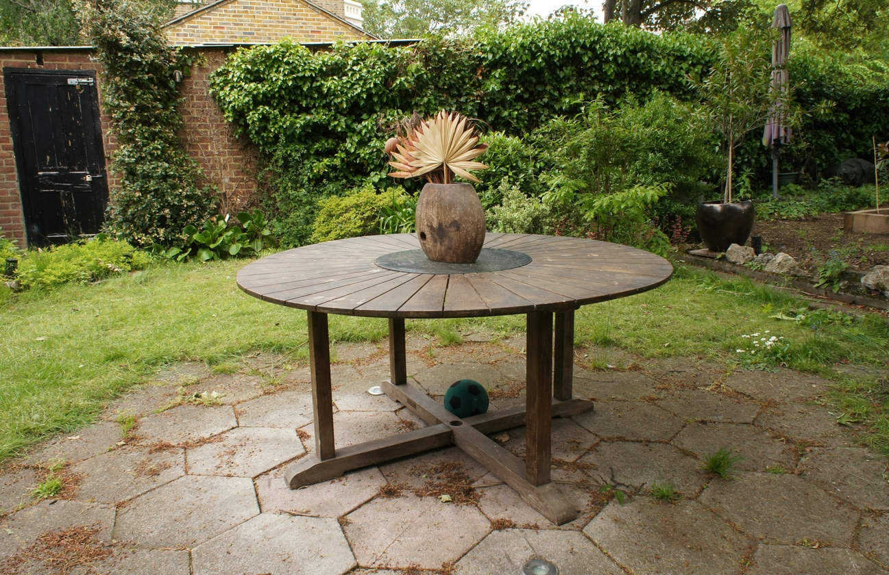
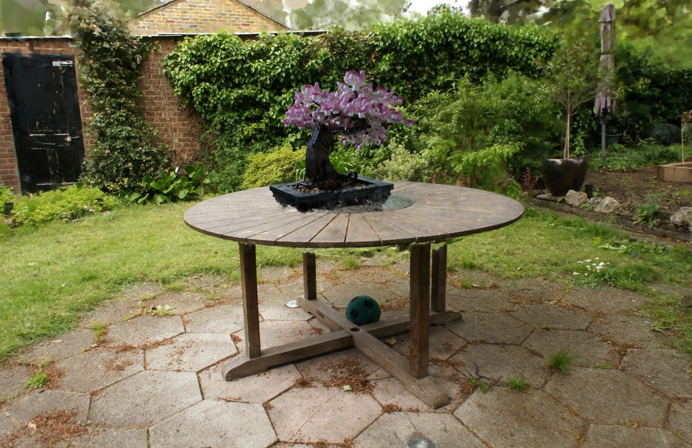
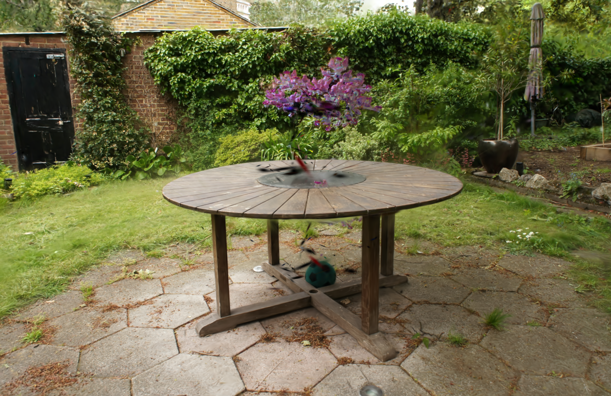
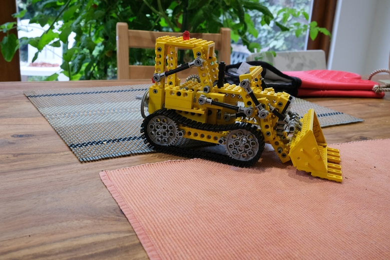
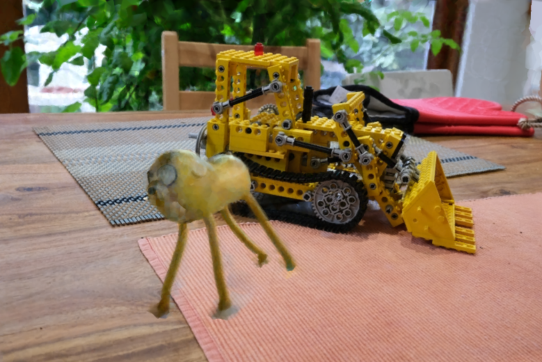
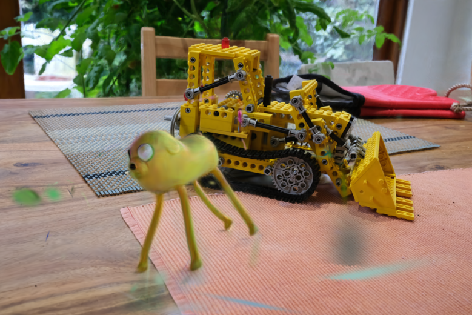


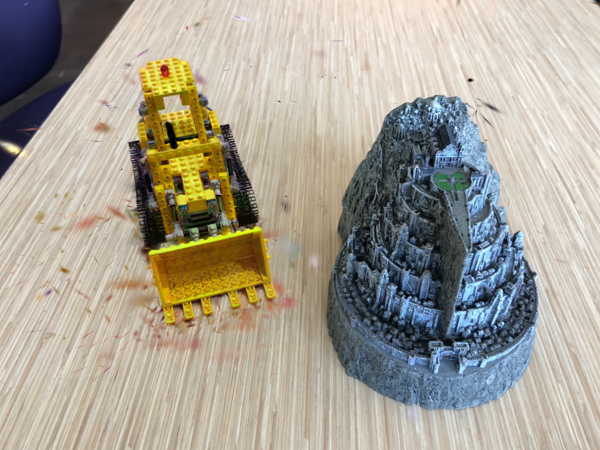
Comparison of object insertion between our semantic foam representation (middle) and Gaussian Grouping (right), with the (left) view showing the unedited reference image. Leveraging Radiant Foam’s implicit surface formulation, our method defines accurate non-convex 3D object masks without requiring convex-hull post-processing. As shown, our approach cleanly inserts the toy and lego in the Kitchen and Fortress scenes respectively, whereas Gaussian Grouping inserts additional noise.
Scene Editing : Object Removal Results
GT Viewpoint
Ours
Gaussian Grouping
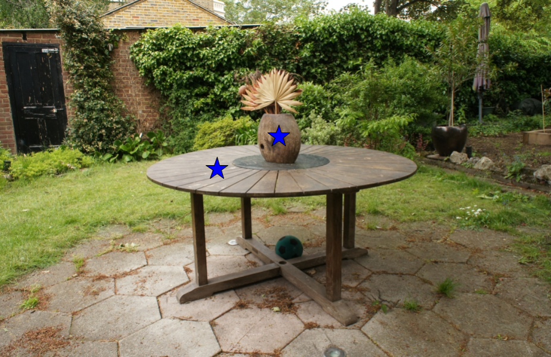
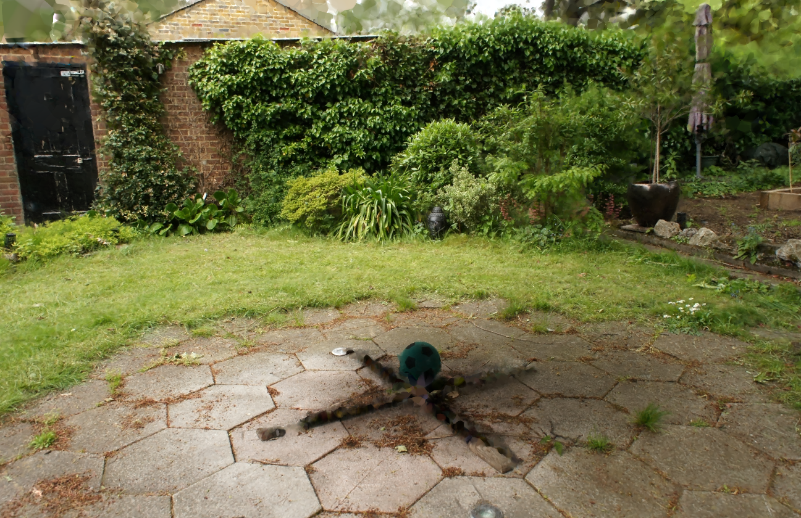
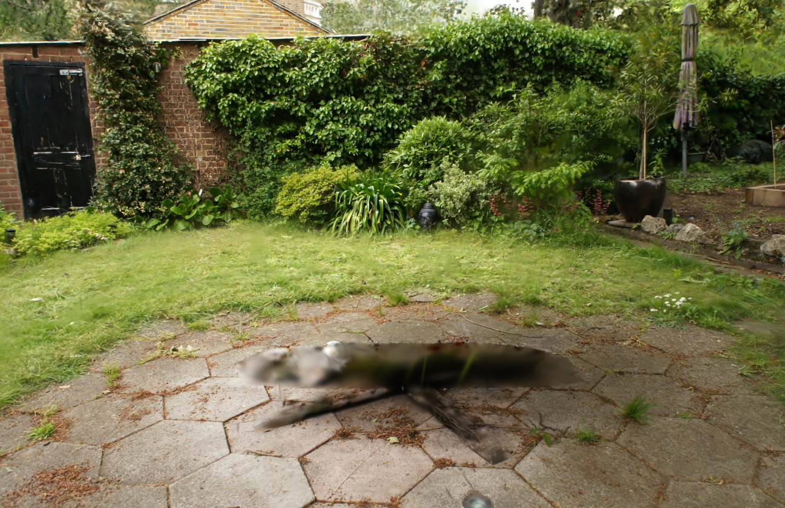
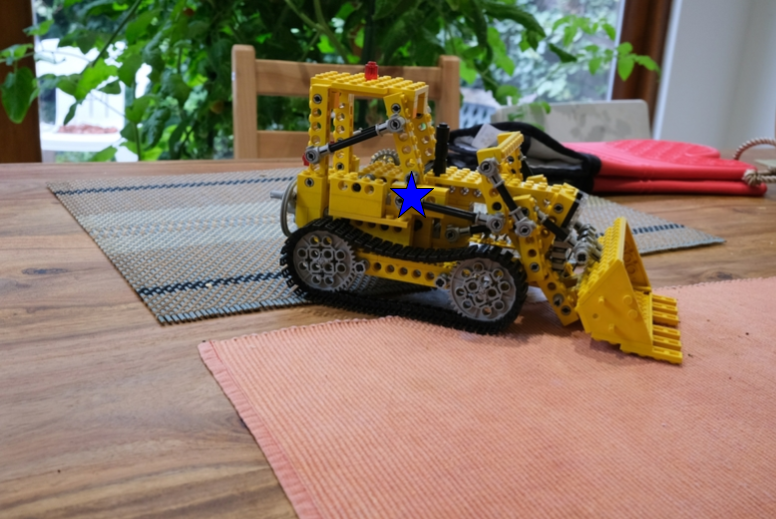
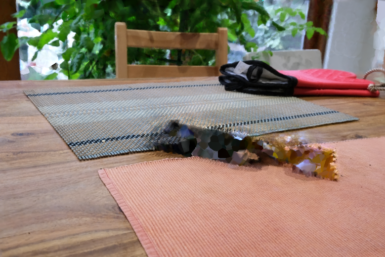
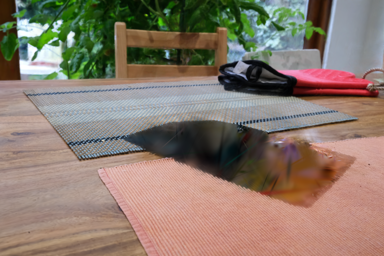
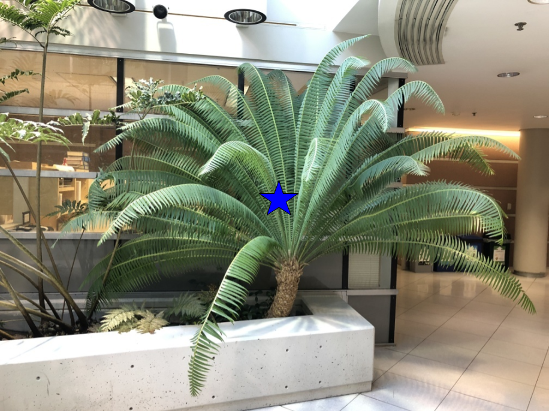
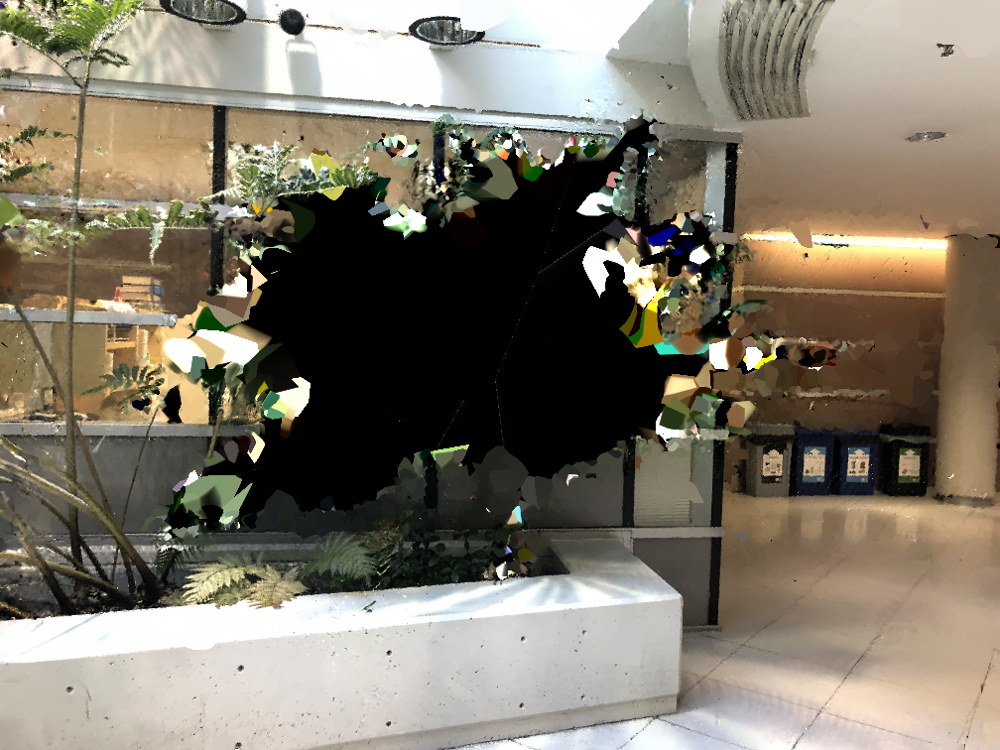
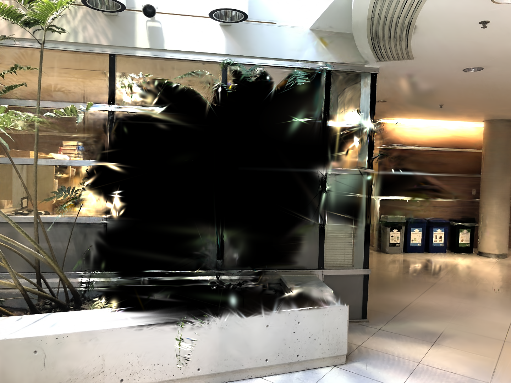
Comparison of object deletion between our semantic foam representation (middle) and Gaussian Grouping (right), with the (left) view showing the unedited reference image. Leveraging Radiant Foam’s implicit surface formulation, our method defines accurate non-convex 3D object masks without requiring convex-hull post-processing. As illustrated, our approach accurately isolates the table and pot in the Garden scene, while Gaussian Grouping over - deletes and erroneously removes the nearby ball due to its convexity-restricted mask formulation.